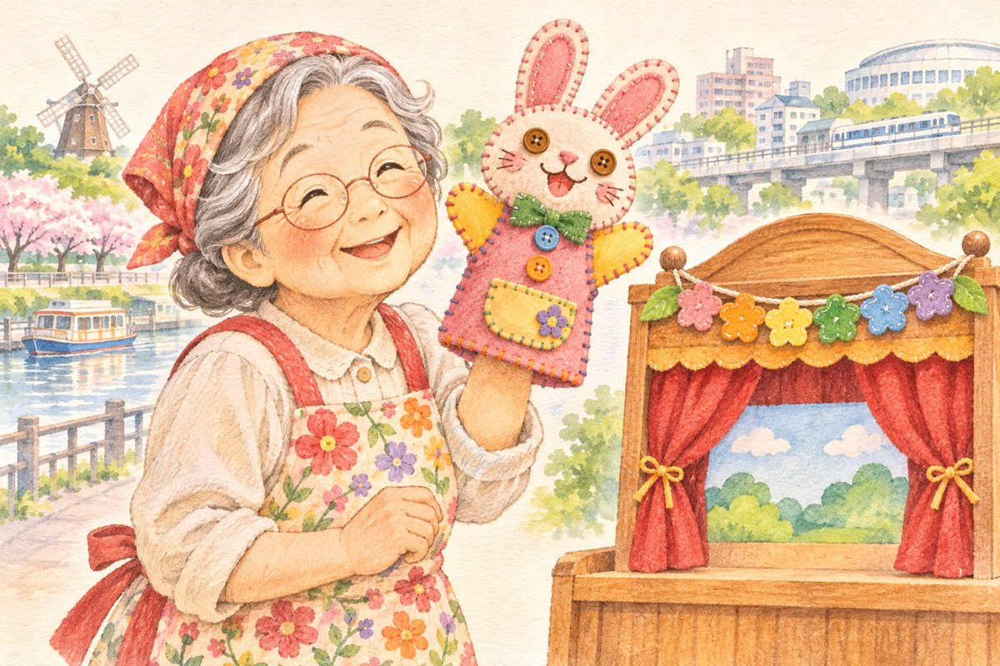

1 / 8 プロフィール
人形劇団「MあんどB」のキャラクター
船橋で、人形劇とともに
船橋で人形劇に取り組み、劇作、演出、演者、美術を担当してきました。公表プロフィールでは、特に人形と舞台美術のデザインを担ってきたことが記されています。
1960年に千葉県船橋市を拠点に人形劇を始め、1994年にアマチュア人形劇団「MあんどB」を創立した人形劇実践者・造形美術家です。本サイトの監修者の歩みをご紹介します。

左右のボタン、スワイプ、矢印キーで進めます。広い画面では2枚並びます。
このサイト「アマチュア人形劇の薦め」は、佐藤澄子（人形劇団 MあんどB 創立者）が監修しています（Supervised by Sumiko Sato）。このページは、その監修者の紹介ページです。
このページは、下記の資料をもとにまとめています（2026年11月時点）。資料で確認できないことは載せていません。